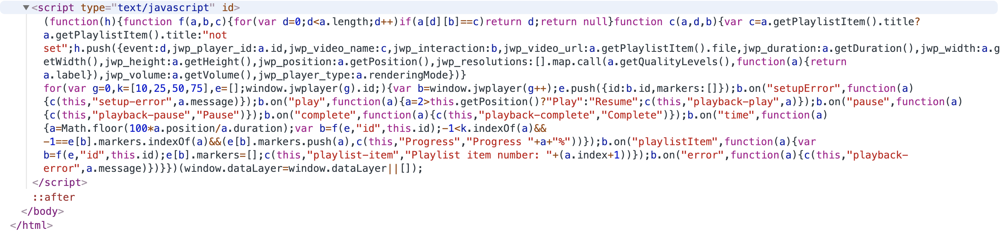

FED Notes & Resources
FED Notes & Resources
AB JW Player Discovery
Discovery - JW Player
The scope of this story is to gain a better understanding of capabilities and integrations needed to implement JW Player on the site.
In addition to a player, JW Player offers a CDN. Preliminary findings conclude that AB is using JW Player to host video content via JW Players CDN, see the following links (requires login?) and markup:
Introduction to US Health Care Providers
<div id="jwplayer-playlist" class="jwplayer jw-reset jw-state-idle jw-stretch-uniform jw-flag-aspect-mode jw-breakpoint-5 jw-floating-dismissible jw-flag-user-inactive" tabindex="0" aria-label="Video Player" role="application" style="width: 100%;" aria-describedby="jw-shortcuts-tooltip-explanation">...</div>Example of video source link:
https://videos-a.jwpsrv.com/content/conversions/Ao1JBOZN/videos/EHD5VDzg-3206359.mp4-35.ts?hdntl=exp=1571249846~acl=/*~data=hdntl~hmac=b9349a3dbaa7f519ce3c8e1bef5c32d9e784321d201113033dd4e25730886162
Everything You Need to Know About Medicare in 13 Minutes
Furthermore, there appears to be a script and associated styling placed inline of the markup:


JW Player Documentation
Styling appears to be loaded with JW Player and not embedded in any of the existing stylesheets provided by the client. The Player CSS skin reference contains all of the information about styling the player.
Playlists are created within the JW Player platform. Playlist information can be found here in the Player configuration reference playlist section
What We Need to Implement JW Player
A log of existing pages where JW Player is currently in use could be helpful, as pages without JW Player hosted videos do not load the JavaScript or Stylesheets needed for the player.
Access to AB JW Player account OR set up a free developer account for development purposes (developer account on JW Player is free for 1 month).